E-commerce site reimagined as a lifestyle brand destination
context
MUJI’s site needs to be redesigned for younger audiences.
As MUJI’s e-commerce grows, younger shoppers need an easier way to explore its huge product catalog. Our team redesigns that experience to feel simple and intuitive, without losing MUJI’s minimalist identity.
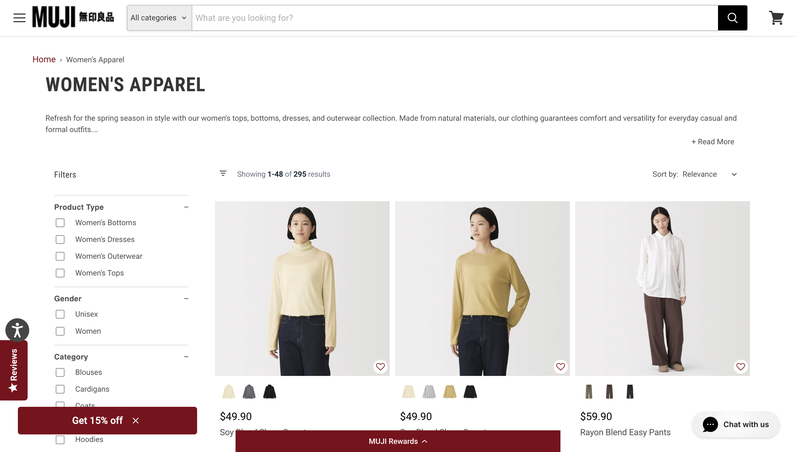
How might we help MUJI communicate their product offerings to a broader, younger audience through their digital e-commerce platform?
Final Designs
A checkout that nudges, without shouting
competitor analysis
We gathered 3 insights on how 14 competitors communicate their products.
We researched brands that overlap with MUJI in both product category and lifestyle positioning, analyzing how they communicated products and drove purchase intent in their e-commerce sites and physical stores.
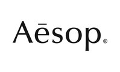
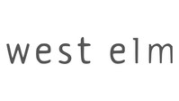
01
Brand storytelling is important
Communicating where a brand comes from builds the trust that drives purchases
02
Clear hierarchies eases browsing
Sites with large catalogs felt most usable when products were presented in a clear structure.
03
Bridge digital and physical shopping
A brand’s identity lives in its physical stores, carrying that online keeps the experience intentional and consistent.
personas
The Loyal Customer and The Curious Passerby
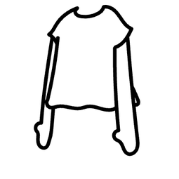
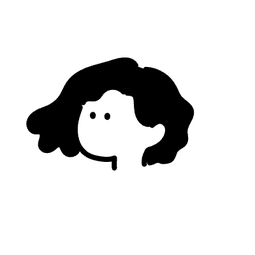
The Loyal Customer
Shopped multiple times at MUJI before, often in-person. Familiar with MUJI’s brand identity.
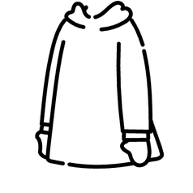
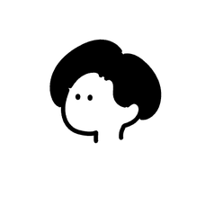
The Curious Passerby
Has heard of MUJI from a friend or has passed by a shop before. Unfamiliar with the product catalog.
Illustrations are created with Humation on Figma
User Research
After 14 interviews of both user types, we spotted 4 gaps in the current web experience.
01
Intrusive promotion
Intrusive pop-ups make navigation difficult and undermines MUJI’s minimalist identity.
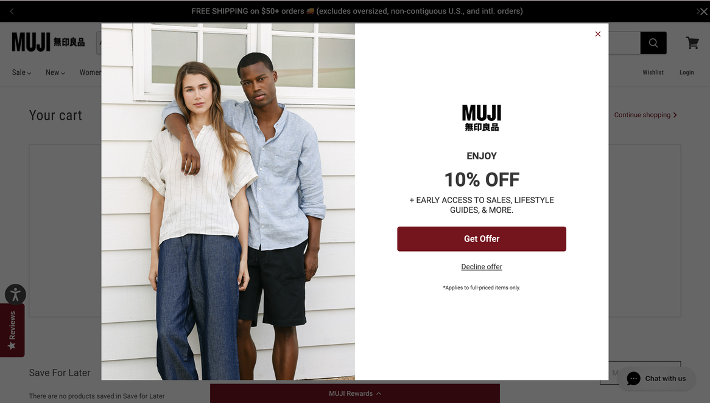
02
Poor web navigation
The nav bar was hard to read and poorly organized, making it hard to find specific products.
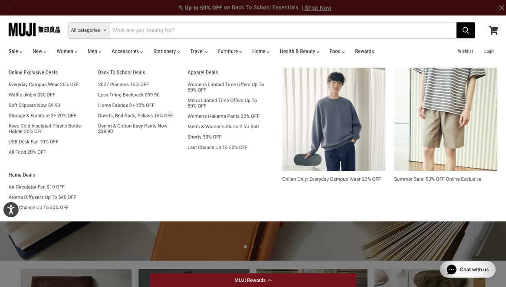
03
Lack of guidance for product discovery
There are no best-seller information or category displays, making it hard to discover products.
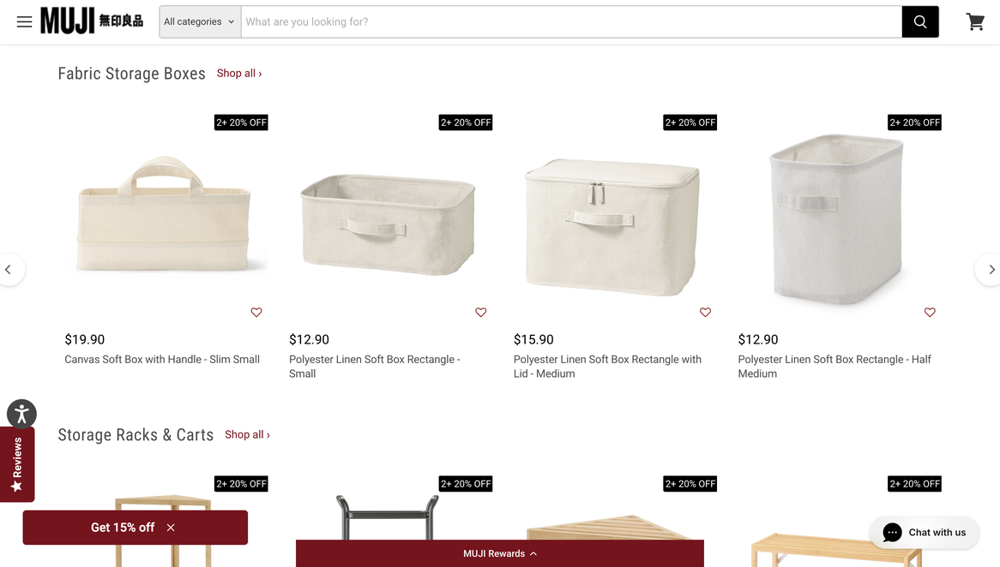
04
Missing the in-store atmosphere
MUJI stores has a calm and clean vibe, but the website feels more functional than immersive.
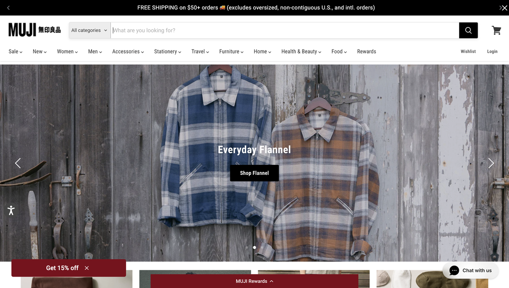
my redesign
I led the redesign of the checkout flow.
Our team divided the site into 5 sections and redesigned each to improve the pain points above. I owned the end-to-end redesign of the checkout flow while also providing feedback on the work of teammates in weekly meetings.
Concept ideation
I drew low-fidelity mockups for the 3 stages of the checkout process.
Overall, the client and I aimed to preserve the promotional elements of the checkout flow and keep encouraging purchases, while also improving usability and guidance on product discovery. The direction of my following iterations were also informed by the more detailed feedback below.
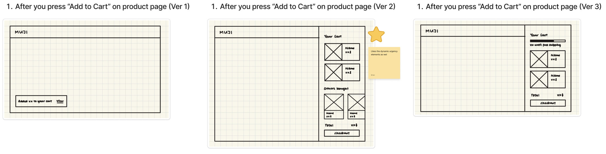
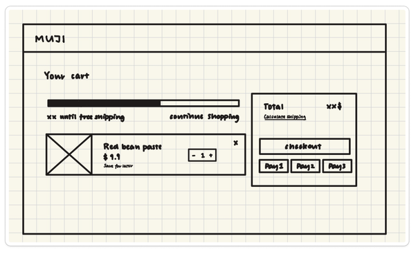
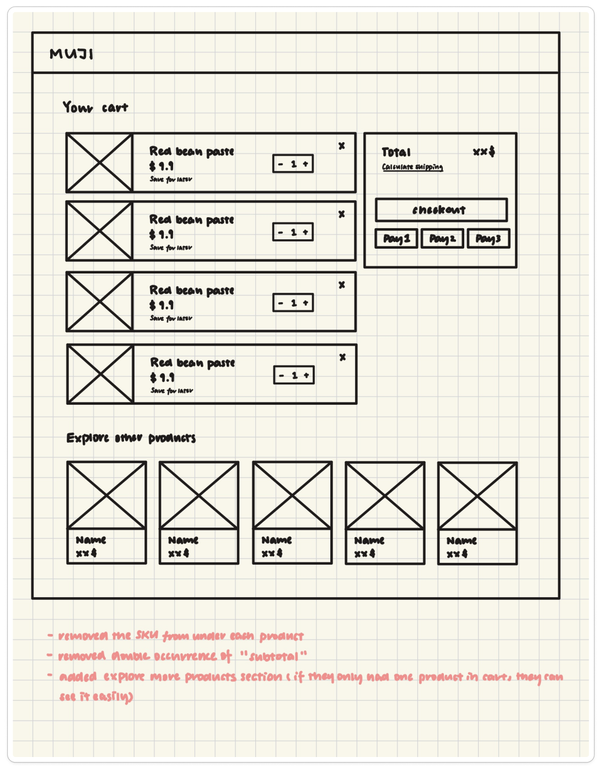
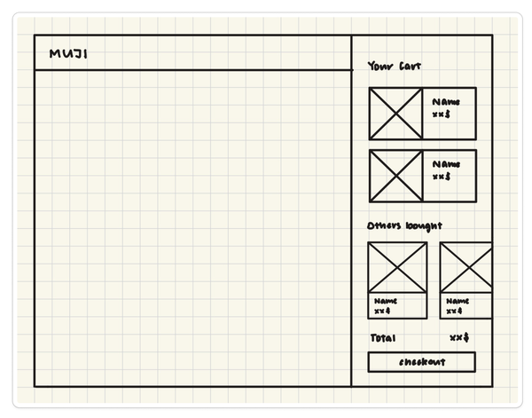
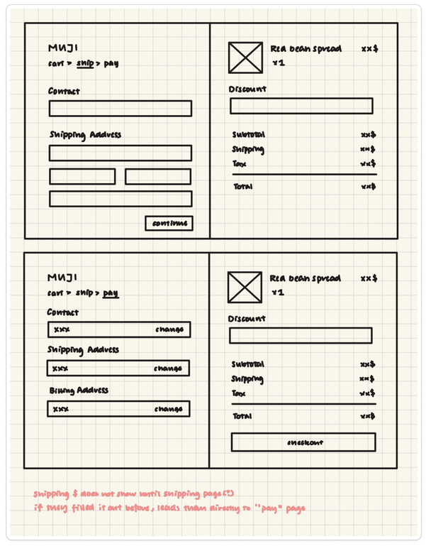
design decisions
Adding an item to the shopping cart
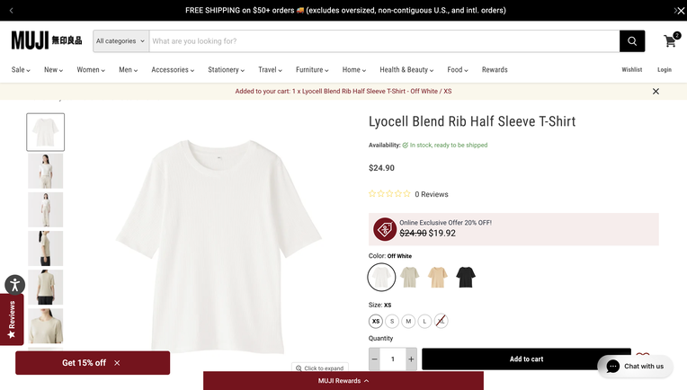
Static notification at the top of the screen without a button to open the cart directly.
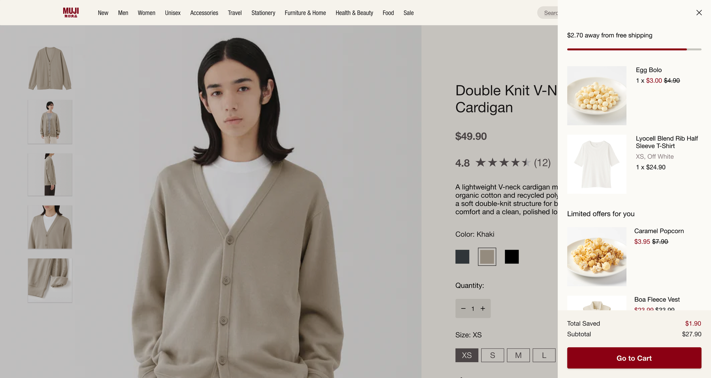
Cart drawer slides in automatically after adding to cart, providing space for upsell.
02 Lack of guidance for product discovery
Discounted price are labeled, “total saved” specified, nudges users towards items on sale without being intrusive.
01 Intrusive promotion
design decisions
Clicking “Check out”
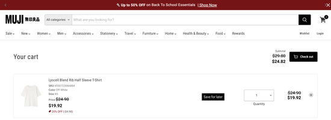
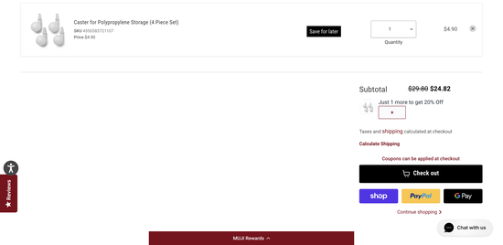
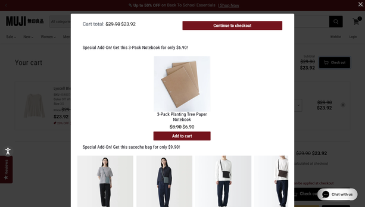
Intrusive pop-up after clicking “Check out”
01 Intrusive promotion
Two occurrences of the “Check out” button
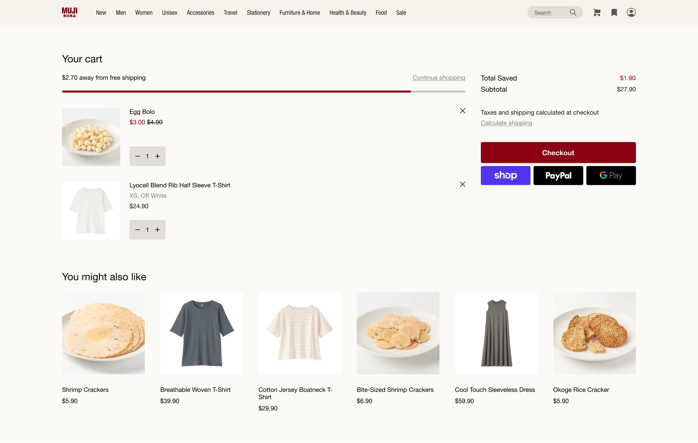
Pop-up replaced by non-intrusive progress bar and product recommendations.
01 Intrusive promotion
Recommend products from browsing history - personalized guidance in product discovery.
02 Lack of guidance for product discovery
design decisions
Shipping page
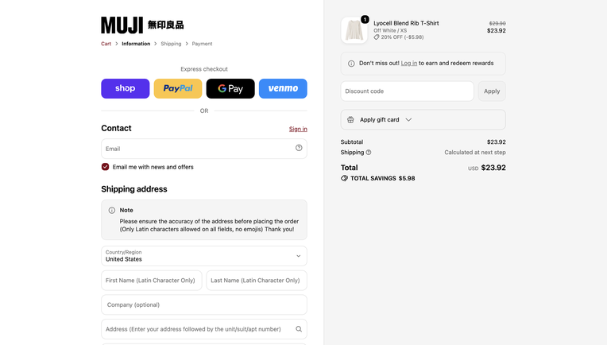
The checkout page uses Shopify’s design, which is inconsistent with other pages
04 Missing the in-store atmosphere
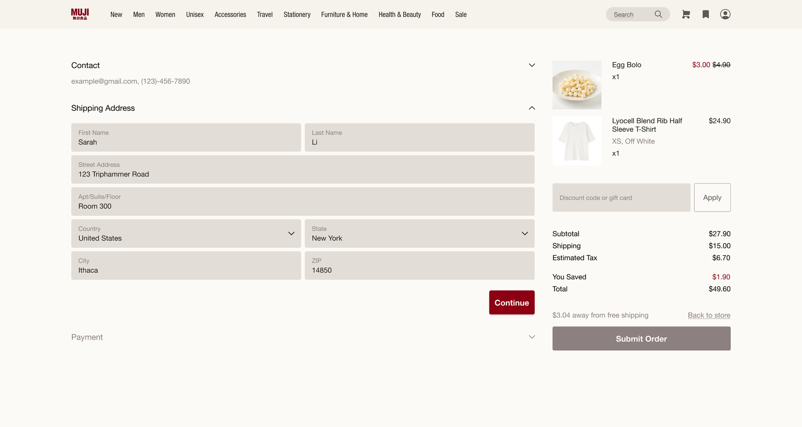
Visual style consistent consistent with MUJI’s design system.
04 Missing the in-store atmosphere
Final Designs
My checkout flow redesign